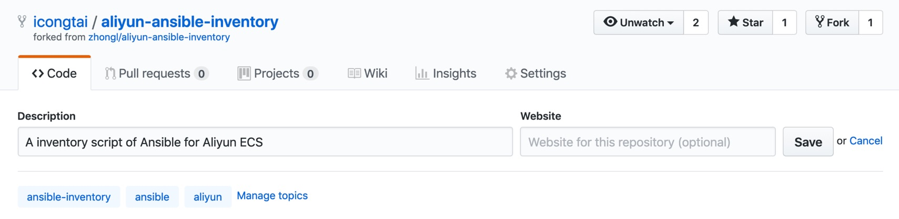
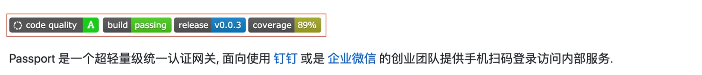
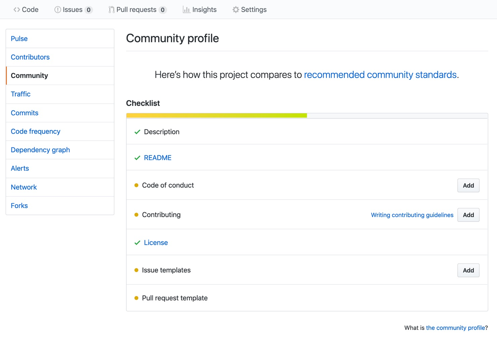

如何优雅地在 GitHub 上开源项目
本文聊聊如何让你的开源项目严肃起来，吸引他人来 Star、Fork，甚至 Pull Request。
首先，我要感谢 Github 让开源变得如此简单，简单到只需要有勇气就行。
门槛虽然降低了，只可惜大多数程序猿并没有足够 (Hua) 严 (Xin) 肃 (Si) 对待，使得开源的项目就好像只是公开的学习笔记，无人问津，完全丧失应有的意义。
本文稍许入门的聊聊，如何让你的项目严 (Bi) 肃 (Ge) 起来，搞不好有人会来 Star, Fork, 甚至 Pull Request 呢!
Description
项目名字当然是第一重要的，不过一个好名字着实不易想。因此，项目描述 (Description) 是不能轻视的，简单一句话介绍好你的项目是什么，往往决定别人是否会继续看你的 README。

Description 最好用英文, Github 是一个全球性的码农社交网站，你的项目不要排斥歪果仁嘛！当然，这不是重点，重点是 Description 和 Name 一样是搜索关键字的来源，对搜索引擎友好，它就会让你的项目排名靠前，这个好处你肯定是懂的。
什么，英文不好？四六级没过，翻译软件总会用吧？
Topic (上图底部那一行) 相当于项目的关键字，同样地有益于搜索引擎提升关联权重。
README
项目可以没有 Description 和 Topic, 但一定不能没有 README. 既然都开源了，若有人无论是以何种方式看到了你的项目，然后他却不知道如何开始，一切前功尽弃。
README 正如其名，是希望看到项目的人第一个了解的就是这个文件里的内容，以此引导他快速且恰当地用起来，从而理解这个项目对他的价值.
内容怎么写？你可以参考对你价值最大的开源项目，参考它们是如何写，一定错不了。
嗯，你可能心里犯嘀咕，那个太专业了，内容太详实，写不来 (其实是懒).
这里捎带些私货为例，介绍常见的两种项目类型的 README 至少要写些什么:
库
- 交代库是用来解决什么问题,
- 示范库基本 (常用) 的用法,
- 介绍使用时依赖 (或安装) 的方法.
为了方便别人使用，你的库最好支持所属编程语言主流的构建方式进行依赖，以 Java 为例最好是 Maven 和 Gradle, Scala 则是 SBT.
这里安利一下 jitpack, 使用它可以很容易将一个 Github 上 JVM 库项目自动构建并发布，远远比往 Maven Central Repository 发布简单.
服务
- 交代服务是用来解决什么问题的,
- 罗列服务跑起来最简单的操作步骤,
- 介绍服务的常用启动参数与配置.
同样，为了方便别人快速体验你的服务，或许提供现成 Docker Image 是个睿智的选择。
Github 生态里有对开源项目免费的 CI/CD 服务，如 travis-ci.org, circleci.com. 强烈推荐使用它们帮助实现 Docker Image 的持续构建与发布.
Badges

上图中那些徽章你一定见过。它们是锦上添花之用，可以突显项目当前的状态，增强项目使用者的信心.
如果你是个对代码质量要求比较高的人，我这里推荐下面的代码状态服务:
它们提供漂亮的Badges
Community
Github 在开源社区的建设上，提供了很多便利的支持，这里不详细展开，如果你希望不仅仅是开源一个项目，而是去打造一个社区，那么不妨去深挖一下 Github 的官方博客或文档，你一定会获益良多的.

在你的项目页中依次点击 Insights - Community 可见上图.
Enjoy!